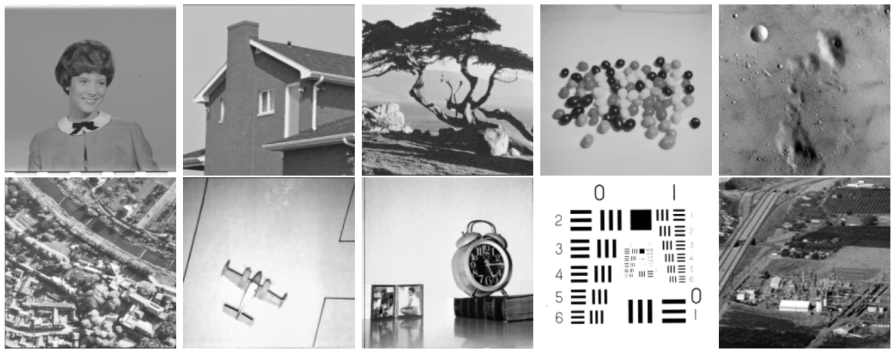
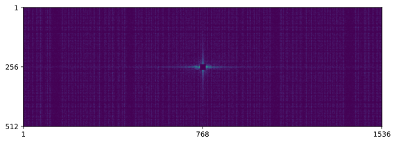

This case study provides a forward statistical model for holographic coherent diffraction imaging (Holo CDI) that generates a random photon flux from an image and explores several ways of solving the inverse problem (i.e., recovering the image from the measured flux). Maximum a posteriori estimates (MAP) and penalized maximum likelihood estimates (MLE) are provided by limited memory quasi-Newton optimization (L-BFGS). Variational Bayes (VB) is implemented with Pathfinder. Markov chain Monte Carlo (MCMC) is implemented with the no-U-turn sampler (NUTS). Evaluations include log density, root mean square error (RMSE), and the image-specific measures structural similarity (SSIM) and and peak signal-to-noise ratio (PSNR).
1 Introduction
Coherent diffraction imaging (CDI) is a technique for imaging nanoscale biomolecules such as macroviruses and proteins. CDI involves exposing the object being imaged to a coherent beam of X-rays and measuring the diffracted photon flux at a sensor placed behind the object being imaged. The diffraction pattern theoretically follows a Fourier transform, but only the squared magnitude is observed, which induces a phase-retrieval problem where the real and imaginary components of the complex variables must be inferred so that the process may be inverted to form an image. Solving the inverse problem for CDI is highly challenging and typically lacks a unique solution (Barnett et al. 2020).
Holographic coherent diffraction imaging (HCDI) is a variant of CDI in which the specimen is placed some distance away from a known reference object, and the data observed is the pattern of diffraction around both the specimen and the reference. The addition of a reference object reduces the inverse problem to a linear deconvolution problem which has a unique, closed-form solution in the idealized setting (Barmherzig et al. 2019).
In this note, we follow Barmherzig and Sun (2022) in defining a forward statistical model that, given the image being reconstructed, defines the expected photon flux at the sensors in terms of the Fourier transform of the image and Poisson sampling of incident photons. Starting from the model of Barmherzig and Sun (2022), we add an intrinsic conditional autoregressive (ICAR) prior on the image which can be used to control smoothing of adjacent pixels (Besag, York, and Mollié 1991). We then log-odds (logit) transform the parameters of the model, which represent pixel intensity between 0 and 1, into unconstrained variables so the model has support on all of \mathbb{R}^{M \times N} for an M \times N pixel image.
The forward model of holographic CDI defines a sampling distribution for the observed photon flux. When combined with a prior, the forward model induces an inverse problem whereby we measure photon flux on a grid of sensors and infer the image that caused it. We will explore the following standard algorithms for exact and approximate solution of the inverse problem.
Penalized maxmum likelihood (MLE): Solve with optimization, do not adjust for unconstraining transform.
Maximum a posteriori (MAP): Solve with optimization, adjusting for the unconstraining transform.
Variational Bayes (VB): Solve by minimizing Kullback-Leibler divergence from an approximate posterior to the true posterior and importance resampling.
Markov chain Monte Carlo (MCMC): Solve by sampling from the posterior and averaging.
Computationally, we will code the models using Stan (Carpenter et al. 2017), a probabilistic programming language for expressing differentiable log densities. All that is needed to solve the inverse problem with Stan is a program implementing the forward model’s log density. Stan uses derivative-based methods for optimization, sampling, and variational inference in order to scale with dimension. It also contains a comprehensive suite of posterior analysis tools for summarizing fits to data.
Barmherzig and Sun (2022) used two different optimizers for maximum likelihood inference, conjugate gradient and trust regions. We will employ limited memory quasi-Newton optimization in the form of the limited-memory BFGS (L-BFGS) optimizer (Zhu et al. 1997), which tends to outperform both conjugate gradient and trust-region methods for relatively simple optimization problems in moderately high dimensions like this one. If the model adjusts for the inverse log odds (logistic) transform, the optimizer produces a maximum a posteriori (MAP) estimate, whereas if the model does not adjust for the change of variables, the optimizer produces a penalized maximum likelihood estimate (MLE).
We employ two different Bayesian methods for solving the inverse problem, variational Bayes (VB) and Markov chain Monte Carlo (MCMC) sampling. For MCMC, we employ the no-U-turn sampler (NUTS) (Hoffman, Gelman, et al. 2014), which is an adaptive form of Hamiltonian Monte Carlo (HMC). With MCMC, the result is an exact posterior sampler for which estimation error goes to zero as sample size goes to infinity. For variational Bayes, we employ Pathfinder (Zhang et al. 2022). With VB, the results are only approximate, and in particular, posterior uncertainty tends to be systematically underestimated because we minimize KL-divergence from the approximation to the target distribution.
1.1 Python boilerplate
Generating the data requires the standard Python numerical libraries scipy.stats and numpy, as well as the plotting library matplotlib to display results. Stan is accessed through the cmdstanpy and bridgestan interfaces. There is also code for converting RGB-coded images to grayscale.
Hide/Show the code
import cmdstanpy as cspimport numpy as npimport scipy as spimport osimport matplotlib as mplimport matplotlib.image as mpimgimport matplotlib.pyplot as pltimport plotnine as pnimport pandas as pdimport loggingimport warnings# turn off warning and info messages from Stancsp.utils.get_logger().setLevel(logging.ERROR)# turn off warnings from plotninewarnings.simplefilter(action='ignore', category=FutureWarning)warnings.filterwarnings( "ignore", module ="plotnine\..*" )def rgb2gray(rgb):"""Convert a nxmx3 RGB array to a grayscale nxm array. This function uses the same internal coefficients as MATLAB: https://www.mathworks.com/help/matlab/ref/rgb2gray.html """ r, g, b = rgb[:, :, 0], rgb[:, :, 1], rgb[:, :, 2] gray =0.2989* r +0.5870* g +0.1140* breturn gray
2 Test images
For simplicity of exposition, we will restrict attention to black and white digital images at 256 \times 256 pixel resolution. The pixel values will be represented with continuous values in [0, 1], with 0 being pure black and 1 pure white. An image is thus an element X \in [0, 1]^{256 \times 256}. Compute time to evaluate the log density and gradients scales linearly in time and memory for each image dimension, which means it scales quadratically in N for an N \times N image.
2.1 Primary test image
We will concentrate on the target image of a mimivirus, a type of giant virus. It is giant in the sense that its genome is over one million base pairs in length. The mimivirus is structured as an icosahedral capsid of approximately 400nm with filaments extending another 100nm around the capsid. An image is shown in Figure 1.
Figure 1: Image of a mimivirus. The capsid is an icosahedron 400nm across with 100nm filaments. Image copyright 2008 by E. Ghigo J. Kartenbeck, P. Lien, L. Pelkmans, C. Capo, J.L. Mege, and D. Raoult D. 2008, and distributed under the CC BY 2.5 license.
2.2 Secondary test images
In addition to the mimivirus image, we will also simulate and reconstruct the ten images show in Figure 2.
Hide/Show the code
img_dir ='img/usc-sipi'image_files =sorted([f for f in os.listdir(img_dir) if f.endswith('.png')])fig, axs = plt.subplots(2, 5, figsize=(20, 8))axs = axs.ravel()for i, ax inenumerate(axs): img_path = os.path.join(img_dir, image_files[i]) gray_img = mpimg.imread(img_path) ax.imshow(gray_img, cmap='gray') ax.axis('off')plt.tight_layout()plt.show()

Figure 2: Images form the USC/SIPI test repository. First row, left to right) female [Bell Labs?], house, tree, jelly beans, moon surface. Second row, left to right) aerial, airplane, clock, resolution chart, chemical plant.
3 The generative model
3.1 Image and photon sensor representations
An image is represented by a random matrix of continuous pixel values between 0 and 1, X \in [0, 1]^{N \times N}. Typically we will be using a representation that excludes the endpoints other than through numerical underflow or rounding. The photons measured at the sensor are represented by a random matrix of discrete counts for the sensor grid, Y \in \mathbb{N}^{M_1 \times M_2}.
3.2 Unconstrained representation and change of variables correction
It is more convenient for both sampling and optimizatio to work over an unconstrained parameterization with support in all of \mathbb{R}^D for some D. As an alternative to the constrained image representation X, consider the smooth, bijective, and strictly monotonic log odds transform applied elementwise, \begin{equation}
U = \textrm{logit}(X),
\end{equation} where \begin{equation}
\textrm{logit}(v) = \log \left( \frac{v}{1 - v} \right)
\qquad
\textrm{logit}^{-1}(u) = \frac{1}{1 + \exp(-u)}.
\end{equation} If p_X has support on (0, 1)^{N \times N}, then p_U has support on all of \mathbb{R}^{N \times N}. The density of U is given by the change of variables formula, \begin{equation}
p_U(u) = p_X(\textrm{logit}^{-1}(u)) \cdot \left| \prod_{i, j} (\textrm{logit}^{-1})'(u_{i,j}) \right|,
\end{equation} where the derivative of the logistic sigmoid \textrm{logit}^{-1} is \begin{equation}
\left(\textrm{logit}^{-1}\right)'(u)
= \textrm{logit}^{-1}(u) \cdot \left( 1 - \textrm{logit}^{-1}(u) \right).
\end{equation} On the log scale, \begin{equation}
\log p_U(u) = \log p_X(\textrm{logit}^{-1}(u))
+ \sum_{i, j} \log \left( (\textrm{logit}^{-1})'(u_{i,j}) \right).
\end{equation}
3.3 Generative process overview
The first step is to generate an image from the prior, \begin{equation}
x \sim p_X\,(\cdot).
\end{equation} Then, given the image x, the second and final step is to generate the photons observed at the sensors y conditoned on the image x, using the sampling distribution, \begin{equation}
y \sim p_{Y \mid X}\,(\cdot \mid x).
\end{equation}
3.4 The prior
3.4.1 Uniform prior is possible
Because the space [0, 1]^{256 \times 256} has finite hypervolume, it would be possible to use a uniform prior over pixel values, p_X(x) \propto 1. At the other extreme, it would also be possible to introduce a meaningful natural image prior (Kadkhodaie and Simoncelli 2021), a promising modern approach to which is based on diffusion models Fei et al. (2023).
3.4.2 ICAR prior in constrained space
Instead of a uniform prior or natural image prior, we will use a simple intrinsic conditional autoregressive (ICAR) prior (Besag, York, and Mollié 1991), which penalizes differences between adjacent pixels according to a scale \sigma > 0. These priors were originally developed for image denoising. The ICAR prior is defined by \begin{equation}
p_X(x) \propto \prod_{(m, n) \sim (m', n')} \textrm{normal}(x_{m,n} \mid x_{m',n'}, \ \sigma),
\end{equation} where \sim is the adjacency relationship defined to be unique so that (m, n) \sim (m + 1, n) for m < 256 and (m, n) \sim (m, n + 1) for n < 256, and where \sigma is the scale of the normal distribution. This density p_X can, in theory, be normalized within the space [0, 1]^{256 \times 256}, but that is not going to be necessary for any of the inference methods we use. It would also be possible to smooth along the diagonals by including an adjacency relation (m, n) \sim (m + 1, n + 1) for m, n < 256, but we do not do evaluate that option here.
Because we will be sampling using the unconstrained space U, we apply the change of variables from X to derive the density in the unconstrained space, \begin{align}
p_U(u) \propto { } &
\prod_{(m, n) \sim (m', n')}
\textrm{normal}\!\left(\textrm{logit}^{-1}(u_{m,n}) \mid \textrm{logit}^{-1}(u_{m',n'}), \ \sigma\right)
\\
&
\hspace*{1em} \cdot \prod_{m, n} \textrm{logit}^{-1}(u_{m, n}) \cdot (1 - \textrm{logit}^{-1}(u_{m,n})).
\end{align}
3.4.3 ICAR prior in unconstrained space
An ICAR prior may also be placed directly on the unconstrained values, \begin{equation}
p_U(u) \propto \prod_{(m, n) \sim (m', n')} \textrm{normal}(u_{m,n} \mid u_{m',n'}, \ \tau),
\end{equation} with \tau being the scale of variation of the unconstrained parameters. As before, X = \textrm{logit}^{-1}(u) recovers the pixel values for use downstream in the model. Conveniently, when parameterized this way, the Jacobian adjustment is not necessary because a distribution is not being placed on the constrained parameters. This approach would not be feasible for natural image priors placed directly on X.
3.5 The sampling distribution
The sampling distribution proceeds in several stages. First, the image is combined with a separator and a reference image and then padded. The result defines the shape of the sensor grid. Next, a discrete Fourier transform is applied to the padded and separated image and reference, the squared absolute values of which determine the proportion of photons that are expected to arrive at the specified sensor. Then a beamstop is applied to the model where it is applied in practice to prevent damage to the sample or sensors. Finally, the expected proportions are normalized for the intensity of the beam and then the photons are generated according to a simple Poisson process.
3.5.1 The reference image
For the experiments here, we use an idealized optimal reference image R, the uniformly redundant array (URA) reference (Fenimore and Cannon 1978); see Figure 3. The URA has been shown to be an optimal reference image for this kind of work. We have just included the reference array as a file, but it can also be generated programatically using a Python package such as cappy. The URA is black and white (i.e., no intermediate gray values), and it has the same dimensions (256 \times 256) as the image being inferred. It will be supplied as data, so that other references can be swapped in depending on the actual reference image being used (e.g., a square cutout, a pinhole, or no reference at all).
Figure 3: Uniformly redundant array. This reference image is optimal for identification through phase retrieval. Other reference images may be used with the same code by swapping the reference data file.
3.5.2 The seperator and reference image
There is also a purely black separator of the same size as the image, which we will use Z to denote because it is full of zero values. Like the reference pattern, this separator is typically chosen to be the same size as the specimen, so that its width d is equal to N, the pixel width of the image. The image X will be combined with the padding Z and the reference image R, and the result will be doenoted as X_Z_R in the code.
After the image, separator, and padding are concatenated left-to-right (i.e., by column), the result \textrm{concat}(X, Z, R) is padded with zero values on the right and on the bottom to a final size of M_1 \cdot M_2. Let \textrm{pad}(\textrm{concat}(X, Z, R), M_1, M_2) be the result.
Figure 4: Source image, zero separator, and reference image concatenated.
It is this combination of image, separator, and reference are the ones subjected to a beam of X-rays.
3.5.3 Padding
The original image, separator and reference image are next padded to the right and below up to a size of M_1 \times M_2. Sensors are placed at each position in the padded matrix. The padding has the effect of interpolating in image space. Let \begin{equation}
P = \textrm{pad}(\textrm{cat}(X^{\textrm{src}}, Z, R), M_1, M_2)
\end{equation} be the padded version of the image, separator, and reference image, where X^{\textrm{src}} is the source image, Z is a zero matrix, and R is the reference image. The padding is taken to be twice the size of the material imaged, so that M_1 = 6 \cdot 256 and M_2 = 2 \cdot 256, which brings the total number of sensors to 786,432, just shy of one megapixel.
3.5.4 Fourier transform shift
Most fast Fourier transform (FFT) interfaces, including those in Stan, Matlab, and Python, return a shifted result with positive and negative values. Specifically, values increase in frequency until N, at which point a mirror image copy with negative indexes is appended to the end. This produces the following order of indexes. \begin{equation}
0, 1, \ldots, N, -N, -N + 1, \ldots, -1.
\end{equation} To get centered values, these are circularly shifted until the lowest frequency, represented at position 0, is in the middle, \begin{equation}
-N, -N + 1, \ldots -1, 0, 1, \ldots, N-1, N.
\end{equation} With a two dimensional FFT, this happens twice, once for the rows and once for the columns. This results in a horizontal and vertical shift, which is why the fftshift operation swaps the diagonal blocks. This can be illustrated with the following code, which creates a matrix of distinct entries, shifts it, then inverse shifts it back. Assuming A, B, C, D are matrices with conforming shapes (for building one big matrix), then \begin{equation}
\textrm{fftshift}\left(
\begin{bmatrix}
A & B
\\
C & D
\end{bmatrix}
\right)
=
\begin{bmatrix}
D & C
\\
B & A
\end{bmatrix}
\end{equation} The elements are swapped across the diagonals, or equivalently, cyclically rotated in the horizontal direction, then in the vertical direction. Consider the following concrete example matrix.
Hide/Show the code
K =4A = np.ones((K, K), dtype=int)for i inrange(K):for j inrange(K): A[i, j] =10* i + jprint(f"A =\n{A}\n")A_shift = np.fft.fftshift(A)
The concatenated and padded image P is next put through a discrete, two-dimensional fast Fourier transform (FFT), which produces a complex matix of values. These complex values, which have real and imaginary components, are then reduced to their real absolute value (aka magnitude). The complex absolute value is the hypoteneuse of their real and imaginary components, but the angle, or phase, is lost. This is why the problem of inferring the image from its Fourier transform is known as a phase-retrieval problem. The absolute value is then squared, resulting in a matrix of values that is proportional to the expected intensity of sensor readings given the image, separator, reference, and padding, \begin{equation}
V = \big| \, \textrm{fft2}(P) \, \big|^2.
\end{equation}P has shape 512 \times 1536, so the two-dimensional FFT requires 1536 one-dimensional FFTs of size 512 and 512 one-dimensional FFTs of size 1536. Figure 5 shows a visualization of V, after the FFT shift to center the low frequencies. The expected photon flux defines a lovely tartan pattern with horizontal and vertical reflection symmetries and a starburst in the center, which indicates the high expected photon flux in the low frequencies (which have been shifted to the center).
Figure 5: Squared magnitudes of the FFT of the concatenated and padded image. The low frequencies have been shifted to the center and the reflective symmetries show how the two-dimensional FFT has horizontal and vertical reflection symmetry. The bright spot in the middle shows the high expected photon flux in the low frequencies. The plot is scaled to \log (1 + V) in order to display the pattern.
3.5.6 Beamstop
To prevent the coherent X-ray beam from destroying the sensors with high photon flux in the low frequencies, the frequency sensors are blocked with a beamstop. This blockage means zero photons arrive at sensors in the stopped positions. The image must be reconstructed from only the remaining sensors.
The beamstop has a configurable radius r and occludes an (2 \cdot r - 1) \times (2 \cdot r - 1) square of censors. These are placed at the low frequencies, which will be the center of the image when it is centered around zero. After the FFT shift is applied, the stopped regions move to the four corners (see the example in the previous section).
The shifted beamstop can be directly encoded as a matrix with zero values everywhere other than the 1 values in the the top left corner (r \times r block), top right (r \times r - 1 block), lower left (r-1 \times r block) and lower right (r - 1 \times r - 1 block). We will let \textrm{beamstop}_{i, j} be equal to 1 if position (i, j) is stopped (i.e., blocked) and 0 otherwise. When pieced together, that’s a (2 \cdot r - 1) \times (2 \cdot r - 1) square that’s stopped. A plot of the beamstop is shown in Figure 6.
Figure 6: Illustration of beamstop before the shifting. The solid blue rectangles occlude the low frequencies in the corners, so that photon flux is not measured at those positions.
3.5.7 Normalization
Let N_p be the number of photons expected per sensor. This is used like an exposure value in a Poisson model to set the scale of the expected photon counts, which are given by the vector \lambda \in (0, \infty)^{M_1 \times M_2}, defined by \begin{equation}
\lambda = \frac{N_p}{\textrm{mean}(V)} \cdot V.
\end{equation}
3.5.8 Poisson photon sampling
Finally, the number of photons observed at each sensor in the grid is generated as a Poisson distribution, based on the expected photon flux \lambda,\begin{equation}
Y_{i, j} \sim
\begin{cases}
\textrm{Poisson}(\lambda_{i, j}) & \textrm{ if } \textrm{beamstop}(i, j) = 0
\\[4pt]
\textrm{Poisson}(0) & \textrm{ if } \textrm{beamstop}(i, j) = 1.
\end{cases}
\end{equation}
A visualization of simulated Y is shown (after being shifted) in Figure 7. The beamstop radius is set to r = 13, so there is a 25 \times 25 pixel square of sensors occluded by the beamstop.
Hide/Show the code
r =13shifted_beamstop = np.ones((M1, M2)) # 0 values are occludedshifted_beamstop[M1 //2- r +1: M1 //2+ r, M2 //2- r +1: M2 //2+ r] =0beamstop = np.fft.ifftshift(shifted_beamstop)N_p =1# expected number of photons per sensorlambbda = N_p / V.mean() * VpreY = sp.stats.poisson.rvs(lambbda, random_state=1234)Y = np.array(preY * beamstop, dtype=int)log1pY = np.log1p(Y)plt.figure(figsize=(9,3))plt.imshow(np.log1p(np.fft.fftshift(Y)), cmap="viridis")plt.xticks([0, 767, 1535], [1, 768, 1536])plt.yticks([0, 255, 511], [1, 256, 512])plt.tight_layout()plt.show()

Figure 7: Sampled value of Y, which is distributed Poisson with rate \lambda. The effect of the beamstop can be seen in the 25 \times 25 pixel black square in the center, indicating a flux of zero. The scaled matrix \log(1 + Y) is shown.
This completes the definition of the likelihood and with the prior, the forward model for simulating data.
4 Stan programs
Stan is an imperative probabilistic programming langauge for statistical models coupled with tools for estimation and posterior analysis (Carpenter et al. 2017). Stan’s Reference Manual(Stan Development Team 2024b) contains complete details and the User’s Guide(Stan Development Team 2024c) provides guidance on usage.
A Stan program defines the log posterior up to a normalizing constant, which is usually coded following Bayes’s rule as the log joint density, \begin{equation}
\log p(x \mid y)
= \log p(y \mid x) + \log p(x) + \textrm{const},
\end{equation} where x is the vector of parameters representing the image and y is the observed photon flux. It reads the data in and then produces a C++ class that can evaluate the log density and use automatic differentiation to define gradients and Hessians (Carpenter et al. 2015). Stan’s inference algorithms are all gradient-based for efficiency and scalability in dimension. Stan is strongly statically typed, so all variables come with declarations of their type and size. Stan is an imperative language like R (R Core Team 2000) or Python (van Rossum and Drake 2010), rather than a declarative language like BUGS (Lunn et al. 2013), so variables other than parameters being inferred must be defined before they are used. Stan programs are organized into blocks for data, parameters, and the log density, plus transforms and predictive quantities. Initially, we will present the constrained model and then later show the few lines that need to change to define an unconstrained model. The full Stan programs are shown in the appendix.
4.1 The data declaration
This is the block declaring all of the data variables that must be supplied externally. The Stan variable names mirror those used in the mathematical definitions.
This involves three functions, only two of which are built-in, rep_matrix to create the d by N matrix of zero values, and append_col to append the zero padding (Z) and reference image (R, read in as data), together side by side. The function beamstop_gen is user defined and given in its own block at the start of the program along with other functions that are necessary.
functions {matrix beamstop_gen(int M1, int M2, int r) {matrix[M1, M2] beamstop = rep_matrix(0, M1, M2);if (r == 0) {return beamstop; } beamstop[1 : r, 1 : r] = rep_matrix(1, r, r); // upper left beamstop[1 : r, M2 - r + 2 : M2] = rep_matrix(1, r, r - 1); // upper right beamstop[M1 - r + 2 : M1, 1 : r] = rep_matrix(1, r - 1, r); // lower left beamstop[M1 - r + 2 : M1, M2 - r + 2 : M2] // lower right = rep_matrix(1, r - 1, r - 1);return beamstop; } ...
This function creates the shifted beamstop matrix by initializing a matrix of zeros of the size of the padding (M1 by M2, given as arguments), then filling in the corners with 1 values based on the radius of the beamstop (r). There are other functions where the ellipses (...) are shown here, and this block of functions appears first in the full Stan program before the data block. The full Stan program in the index contains full function documentation for this and other user-defined functions appearing in the Stan program.
4.3 Parameter declaration
The parameters are declared but not defined. During execution, parameter values are managed by the optimization or sampling algorithm and will thus be supplied to a Stan program externally.
It is important that the bounds here, lower=0 and upper=1 are included on the parameter declaration. These define the constrained domain for X. Stan operates with unconstrained parameters, so the variable X will be implicitly log-odds transformed from (0, 1) to (-\infty, \infty) (Stan’s intervals are open when going from unconstrained to constrained representations, but can wind up on th boundary due to arithmetic underflow or rounding). Stan implicitly applies the change-of-variables correction for the inverse of the log-odds transform so that a prior may be placed directly on X and propagate correctly to the unconstrained parameers logit(X).
4.4 The model block
The model block defines the log density, adding terms to those already added through the Jacobian determinant of the unconstraining transform.
The first line, X ~ icar(sigma) says that X has an ICAR prior. The icar distribution is not built into Stan, so it must be defined by the user. Here’s the definition.
real icar_lpdf(matrix X, real sigma) {int M = rows(X);int N = cols(X);return normal_lpdf(to_vector(X[2:M, ]) | to_vector(X[1:M - 1, ]), sigma) + normal_lpdf(to_vector(X[ , 2:N]) | to_vector(X[ , 1:N - 1]), sigma); }
Following the math, it’s just a quadratic penalty on differences between row- and column-adjacent elements. Stan allows vector slicing in the same way as MATLAB (MATLAB Team 2024) and R. The variable sigma controls the amount of regularization applied to adjacent elements; it is supplied as a data variable from the outside, though it could be fit in a hierarchical model.
The second line of the model block defines the matrix X_Z_R to be the result of concatenating the image (parameter X) to the zero separator and reference image (Z_R). The third line defines the matrix V to be the result of performing a two-dimensional FFT on the image, separator and reference padded out to M1 rows by zero-padding on the bottom and M2 columns by zero-padding on the right. this is defined in the following user-defined function.
complex_matrix pad_fft2(complex_matrix Z, int N, int M) {int r = rows(Z);int c = cols(Z);complex_matrix[N, M] pad = rep_matrix(0, N, M); pad[1 : r, 1 : c] = Z;return fft2(pad); }
This just pads the matrix with zeros, then applies the built-in two-dimensional FFT function to the padded image, separator, and reference (Z). The result is a matrix of complex values. The model expression then takes the absolue value of the complex matrix elemenetwise (which produces a real-valued matrix of the smae dimension), the result of which is squared elementwise to produce the matrix V, the entries of which are proportional to the photon flux expected at that position. The next line of the model defines lambda by normalizing V to the expected per-sensor photon count N_p.
The final lines of the model loop over the entries of the padded matrix which are not beamstopped and sample photons (Y) with a Poisson distribution based on the rate (lambda). This defines the likelihood and completes the model specification, which has followed the mathematical definition of the forward model directly.
4.5 Alternative unconstrained model
The unconstrained model is almost identical to the constrained-parameter model. It defines an unconstrained representation of parameters, then transforms them in the transformed parameter block as follows:
The parameter for the model is now logit_X, which is the log-odds transformed pixel value. The constrained matrix X is then defined in the transformed parameters block. Here, the constraints in the transformed parameter block, like those in the data block, are just used for error checking—they are validated at the end of the block’s execution and the iteration is rejected with an error message if the constraint fails.
The only other difference is that the ICAR prior is placed directly on the log odds parameters in the model block,
logit_X ~ icar(sigma);
This changes the interpretation of sigma from being on the pixel-value scale (0, 1) to the unconstrained scale (-\infty, \infty). The values of logit_X in practice will range between -10 and 10, the extremes of which correspond to nearly pure black and white, respectively.
5 Estimation and Posterior Inference
Given a Stan program for a model and the corresponding data, fitting the model is straightforward using cmdstanpy (Stan Development Team 2024a).
5.1 Compiling the models
The first thing to do is to compile the Stan model. This is done by transpiling from Stan to C++, then compiling the C+ and linking against the rest of Stan’s math library and algorithms. This is all handled by the following CmdStanPy calls, one for the constrained and one for the unconstrained model.
Hide/Show the code
model = csp.CmdStanModel(stan_file='stan/holoCDI.stan')model_unc = csp.CmdStanModel(stan_file='stan/holoCDI-unc.stan')
5.2 Constructing the data dictionary
CmdStanPy takes in data in the form of a Python dictionary. The dictionary needs to define all the variables used in the Stan program and they have to be the right shapes to match the Stan declarations. All of the constants have been defined and the data Y has been simulated. Here, the value for sigma is defined to be 1; other prior scales are evaluated below.
Hide/Show the code
sigma =1data = {"N": N, "R": R, "d": N, "M1": M1, "M2": M2, "r": r, "N_p": N_p,"Y": Y, "sigma": sigma}
5.3 Optimization-based point estimates
In this section, Stan’s optimizer is used to find point estimates as modes of a target density. Stan uses L-BFGS (Zhu et al. 1997), a limited-memory form of quasi-Newton optimization, which is a widely used black-box optimizer that uses finite-differences of the past few gradients to approximate a low-rank plus diagonal preconditioner dynamically doing optimization. This reduces linear algebra from the \mathcal{O}(N^3) required for Newton’s method to \mathcal{O}(J^2 \cdot N), where J is the rank of the preconditioner before adding the diagonal to make it positive definite.
5.3.1 Penalized maximum likelihood estimation
Interpreting the ICAR prior as a quadratic penalty, a penalized maximum likelihood estimate (MLE) x^* is defined by \begin{equation}
x^* = \textrm{arg max}_x \log p(y; \, x) + \log \textrm{icar}(x),
\end{equation} but with no Jacobian adjustment for any change-of-variables used to constrain x because x is no longer considered to be a random variable (hence the semicolon in the notation).
This estimate can be computed through optimization in Stan and extracted into a Python variable.
A random seed is hardcoded for reproducibility and initialiation is specified to be \textrm{uniform}(-0.5, 0.5) on the unconstrained scale. The Jacobian adjustment for the constrained parameter is turned off here for computing the MLE.
5.3.2 Maximum a posteriori estimation
An alternative point estimation strategy can be derived by taking the point in the posterior with maximum posterior log density. Here, the Jacobian adjustment for the constraining transform to x is included as part of the definition of p(x \mid y).
The third estimation strategy involves the direct unconstrained parameterization with an ICAR prior on the unconstrained parameters. Because there are no constraining transforms, the penalized MLE and MAP estimates coincide. These can be computed in Stan as follows.
Hide/Show the code
sigma_unc =10data_unc = {"N": N, "R": R, "d": N, "M1": M1, "M2": M2, "r": r, "N_p": N_p,"Y": Y, "sigma": sigma_unc}fit_mle_unc = model_unc.optimize(data = data_unc, inits=0.5, jacobian=False, seed =5678)X_hat_mle_unc = fit_mle_unc.stan_variable('X')
5.3.4 Visualizing the optimization-based fits
Figure 8 shows the fits for the MLE, MAP, and unconstrained MLE/MAP estimates as well as the original image from which data is simulated.
Figure 8: Original image and optimization-based reconstructions. (a) original source image, (b) penalized maximum likelihood estimate, (c) maximum a posteriori estimate, (d) penalized maximum likelihood (equivalently maximum a posteriori) estimate for unconstrained model.
5.4 Effect of prior scale
There is a free tuning parameter \sigma, which is the prior scale. This is input as data to the Stan program and used in the ICAR prior to smooth (i.e., regularize) the values of adjacent pixels toward each other. The earlier example used \sigma = 1, which does very little smoothing given that the range of values is 0 to 1. A range of values for \sigma can be evaluated in a loop.
Figure 9: Effect of different sigma values on smoothing.
5.5 Bayesian estimates and samples
We consider two Bayesian methods, both of which produce draws and allow for plug-in Monte Carlo estimation of posterior predictive quantitites. The first is variational inference, which provide approximate posterior draws, and the second is Markov-chain Monte Carlo, which is much more expensive, but produces unbiased posterior draws.
5.5.1 Variational inference
Variational inference fits an approximate distribution q(x \mid \phi) to the target posterior density p(x \mid y) by choosing the approximating parameters \phi that render it closest in terms of Kullback-Leibler divergence, \begin{equation}
\phi^* = \textrm{arg max}_\phi \ \textrm{KL}[q(x \mid \phi) || p(x \mid y)].
\end{equation} In this case study, the Pathfinder approach is used (Zhang et al. 2022). Pathfinder runs quasi-Newton optimization on the target density p(x \mid y) from random initializations and then uses points along the optimization trajectory as the location of second-order Taylor approximations to the target density with the low-rank plus diagonal covariance estimated by the L-BFGS optimizer. The result is a series of multivariate normal approximations. Each of these is evaluated for KL-divergence using Monte Carlo methods (which are stable for the KL divergence in a way they are not stable for the gradients). This is done several times and then the normal approximations are sampled using importance resampling. This gives us unconstrained draws, which are then constrained to give the final set of draws for the method.
Markov-chain Monte Carlo methods run a Markov chain, which in the limit has the target density as its stationary distribution. This allows draws from the chain to be used for plug-in Monte Carlo estimates.
Sampling is run in the same way as Pathinder, with draws being extracted and averaged to create the estimate.
Barmherzig, David A, and Ju Sun. 2022. “Towards Practical Holographic Coherent Diffraction Imaging via Maximum Likelihood Estimation.”Optics Express 30 (5): 6886–906. https://doi.org/10.1364/OE.445015.
Barmherzig, David A, Ju Sun, Po-Nan Li, T J Lane, and Emmanuel J Candès. 2019. “Holographic Phase Retrieval and Reference Design.”Inverse Problems 35 (9): 094001. https://doi.org/10.1088/1361-6420/ab23d1.
Barnett, Alexander H, Charles L Epstein, Leslie F Greengard, and Jeremy F Magland. 2020. “Geometry of the Phase Retrieval Problem.”Inverse Problems 36 (9): 094003. https://doi.org/10.1088/1361-6420/aba5ed.
Besag, Julian, Jeremy York, and Annie Mollié. 1991. “Bayesian Image Restoration, with Two Applications in Spatial Statistics.”Annals of the Institute of Statistical Mathematics 43: 1–20.
Carpenter, Bob, Andrew Gelman, Matthew D Hoffman, Daniel Lee, Ben Goodrich, Michael Betancourt, Marcus A Brubaker, Jiqiang Guo, Peter Li, and Allen Riddell. 2017. “Stan: A Probabilistic Programming Language.”Journal of Statistical Software 76.
Carpenter, Bob, Matthew D Hoffman, Marcus Brubaker, Daniel Lee, Peter Li, and Michael Betancourt. 2015. “The Stan Math Library: Reverse-Mode Automatic Differentiation in C++.”arXiv 1509 (07164).
Fei, Ben, Zhaoyang Lyu, Liang Pan, Junzhe Zhang, Weidong Yang, Tianyue Luo, Bo Zhang, and Bo Dai. 2023. “Generative Diffusion Prior for Unified Image Restoration and Enhancement.” In Proceedings of the IEEE/CVF Conference on Computer Vision and Pattern Recognition, 9935–46.
Fenimore, E. E., and T. M. Cannon. 1978. “Coded Aperture Imaging with Uniformly Redundant Arrays.”Applied Optics 17 (3): 337–47. https://doi.org/10.1364/AO.17.000337.
Graikos, Alexandros, Nikolay Malkin, Nebojsa Jojic, and Dimitris Samaras. 2022. “Diffusion Models as Plug-and-Play Priors.”Advances in Neural Information Processing Systems 35: 14715–28.
Hoffman, Matthew D, Andrew Gelman, et al. 2014. “The No-U-Turn Sampler: Adaptively Setting Path Lengths in Hamiltonian Monte Carlo.”Journal of Machine Learning Research 15 (1): 1593–623.
Kadkhodaie, Zahra, and Eero Simoncelli. 2021. “Stochastic Solutions for Linear Inverse Problems Using the Prior Implicit in a Denoiser.”Advances in Neural Information Processing Systems 34: 13242–54.
Lunn, David, Christopher Jackson, Nicky Best, Andrew Thomas, and David Spiegelhalter. 2013. The BUGS Book: A Practical Introduction to Bayesian Analysis, Chapman Hall, London. CRC.
MATLAB Team. 2024. MATLAB Reference Manual (version R2023b). Natick, Massachusetts: The MathWorks Inc.
R Core Team. 2000. “R Language Definition.”R Journal 3 (1).
van Rossum, Guido, and Fred L Drake. 2010. The Python Language Reference. Vol. 561. Scotts Valley, California: CreateSpace Independent Publishers. https://docs.python.org/3/reference/index.html.
Zhang, Lu, Bob Carpenter, Andrew Gelman, and Aki Vehtari. 2022. “Pathfinder: Parallel Quasi-Newton Variational Inference.”The Journal of Machine Learning Research 23 (1): 13802–50.
Zhu, Ciyou, Richard H Byrd, Peihuang Lu, and Jorge Nocedal. 1997. “Algorithm 778: L-BFGS-B: Fortran Subroutines for Large-Scale Bound-Constrained Optimization.”ACM Transactions on Mathematical Software (TOMS) 23 (4): 550–60.
Appendicies
A. Stan Programs
A.1 Constrained parameter version
functions {/** * Return a beam stop of dimension M1 x M2, with 1 values blocking * the lowest frequency portions of an FFT and 0 values elsewhere. * The result is an M1 x M2 matrix of 0 values with blocks in the * corners set to 1. The block sizes are upper left (r x r), upper * right (r x r-1), lower left (r-1 x r), and lower right (r-1 x * r-1). * * @param M1 number of rows * @param M2 number of cols * @param r block dimension * @return M1 x M2 matrix with 1 for stopped and 0 for passed values. */matrix beamstop_gen(int M1, int M2, int r) {matrix[M1, M2] beamstop = rep_matrix(0, M1, M2);if (r == 0) {return beamstop; } beamstop[1 : r, 1 : r] = rep_matrix(1, r, r); // upper left beamstop[1 : r, M2 - r + 2 : M2] = rep_matrix(1, r, r - 1); // upper right beamstop[M1 - r + 2 : M1, 1 : r] = rep_matrix(1, r - 1, r); // lower left beamstop[M1 - r + 2 : M1, M2 - r + 2 : M2] // lower right = rep_matrix(1, r - 1, r - 1);return beamstop; }/** * Return the matrix corresponding to the fast Fourier transform of * Z after it is padded with zeros (to the right and below) to shape * N x M. When N x M is larger than the dimensions of Z, the result * is an oversampled two-dimensional discrete Fourier transform. * * @param Z matrix of values * @param N number of rows desired (must be >= rows(Z)) * @param M number of columns desired (must be >= cols(Z)) * @return the FFT of Z padded with zeros */complex_matrix pad_fft2(complex_matrix Z, int N, int M) {int r = rows(Z);int c = cols(Z);complex_matrix[N, M] pad = rep_matrix(0, N, M); pad[1 : r, 1 : c] = Z;return fft2(pad); }/** * Return the intrinsic conditional autoregressive prior density * for the specified image matrix X. this is * * @param X image matrix with values in (0, 1) * @param sigma scale of ICAR prior * @return ICAR log density for the specified matrix and scale */real icar_lpdf(matrix X, real sigma) {int M = rows(X);int N = cols(X);return normal_lupdf(to_vector(X[2:M, ]) | to_vector(X[1:M - 1, ]), sigma) + normal_lupdf(to_vector(X[ , 2:N]) | to_vector(X[ , 1:N - 1]), sigma); }}data {int<lower=0> N; // image dimensionmatrix<lower=0, upper=1>[N, N] R; // registration imageint<lower=0> d; // separator widthint<lower=N> M1; // padded rowsint<lower=2 * N + d> M2; // padded colsint<lower=0, upper=M1> r; // beamstop radiusreal<lower=0> N_p; // avg photons per pixelarray[M1, M2] int<lower=0> Y; // observed number of photonsreal<lower=0> sigma; // prior scale}transformed data {matrix[M1, M2] beamstop = beamstop_gen(M1, M2, r); // beam stopmatrix[d, N] Z = rep_matrix(0, d, N); // separatormatrix[N, N + d] Z_R = append_col(Z, R); // separator + ref}parameters {matrix<lower=0, upper=1>[N, N] X; // image}model { X ~ icar(sigma);matrix[N, 2 * N + d] X_Z_R = append_col(X, Z_R);matrix[M1, M2] V = square(abs(pad_fft2(X_Z_R, M1, M2)));matrix[M1, M2] lambda = N_p / mean(V) * V;for (m1 in1 : M1) {for (m2 in1 : M2) {if (beamstop[m1, m2] != 1) { Y[m1, m2] ~ poisson(lambda[m1, m2]); } } }}
A.2 Unconstrained parameter version
functions {/** * Return a beam stop of dimension M1 x M2, with 1 values blocking * the lowest frequency portions of an FFT and 0 values elsewhere. * The result is an M1 x M2 matrix of 0 values with blocks in the * corners set to 1. The block sizes are upper left (r x r), upper * right (r x r-1), lower left (r-1 x r), and lower right (r-1 x * r-1). * * @param M1 number of rows * @param M2 number of cols * @param r block dimension * @return M1 x M2 matrix with 1 for stopped and 0 for passed values. */array[ , ] int beamstop_gen(int M1, int M2, int r) {array[M1, M2] int B_cal = rep_array(0, M1, M2);if (r == 0) {return B_cal; } B_cal[1 : r, 1 : r] = rep_array(1, r, r); // upper left B_cal[1 : r, M2 - r + 2 : M2] = rep_array(1, r, r - 1); // upper right B_cal[M1 - r + 2 : M1, 1 : r] = rep_array(1, r - 1, r); // lower left B_cal[M1 - r + 2 : M1, M2 - r + 2 : M2] // lower right = rep_array(1, r - 1, r - 1);return B_cal; }/** * Return the matrix corresponding to the fast Fourier transform of * Z after it is padded with zeros (to the right and below) to shape * N x M. When N x M is larger than the dimensions of Z, the result * is an oversampled two-dimensional discrete Fourier transform. * * @param Z matrix of values * @param N number of rows desired (must be >= rows(Z)) * @param M number of columns desired (must be >= cols(Z)) * @return the FFT of Z padded with zeros */complex_matrix pad_fft2(complex_matrix Z, int N, int M) {int r = rows(Z);int c = cols(Z);complex_matrix[N, M] pad = rep_matrix(0, N, M); pad[1 : r, 1 : c] = Z;return fft2(pad); }/** * Return the intrinsic conditional autoregressive prior density * for the specified image matrix X. this is * * @param X image matrix with values in (0, 1) * @param sigma scale of ICAR prior * @return ICAR log density for the specified matrix and scale */real icar_lpdf(matrix X, real sigma) {int N = rows(X);int M = cols(X);return normal_lpdf(to_vector(X[2:N, ]) | to_vector(X[1:N - 1, ]), sigma) + normal_lpdf(to_vector(X[ , 2:M]) | to_vector(X[ , 1:M - 1]), sigma); }}data {int<lower=0> N; // image dimensionmatrix<lower=0, upper=1>[N, N] R; // registration imageint<lower=0, upper=N> d; // separatorint<lower=N> M1; // padded rowsint<lower=2 * N + d> M2; // padded colsint<lower=0, upper=M1> r; // beamstop radiusreal<lower=0> N_p; // avg photons per pixelarray[M1, M2] int<lower=0> Y; // observed number of photonsreal<lower=0> sigma; // prior scale}transformed data {array[M1, M2] int<lower=0, upper=1> beamstop = beamstop_gen(M1, M2, r);matrix[d, N] Z = rep_matrix(0, d, N); // seperatormatrix[N, N + d] Z_R = append_col(Z, R); // separator + ref}parameters {matrix[N, N] logit_X; // log-odds transformed image}transformed parameters {matrix<lower=0, upper=1>[N, N] X = inv_logit(logit_X); // image}model { logit_X ~ icar(sigma);matrix[N, 2 * N + d] X_Z_R = append_col(X, Z_R);matrix[M1, M2] V = square(abs(pad_fft2(X_Z_R, M1, M2)));matrix[M1, M2] lambda = N_p / mean(V) * V; for (m1 in1 : M1) {for (m2 in1 : M2) {if (!beamstop[m1, m2]) { Y[m1, m2] ~ poisson(lambda[m1, m2]); } } }}
@article{ward2024,
author = {Ward, Brian and Carpenter, Bob and Barmherzig, David},
publisher = {Société Française de Statistique},
title = {Estimation and {Sampling} for {Holographic} {Coherent}
{Diffraction} {Imaging}},
journal = {Computo},
date = {2024-03-28},
url = {https://computo.sfds.asso.fr/template-computo-quarto},
doi = {xxxx},
issn = {2824-7795},
langid = {en},
abstract = {This case study provides a forward statistical model for
holographic coherent diffraction imaging (Holo CDI) that generates a
random photon flux from an image and explores several ways of
solving the inverse problem (i.e., recovering the image from the
measured flux). Maximum a posteriori estimates (MAP) and penalized
maximum likelihood estimates (MLE) are provided by limited memory
quasi-Newton optimization (L-BFGS). Variational Bayes (VB) is
implemented with Pathfinder. Markov chain Monte Carlo (MCMC) is
implemented with the no-U-turn sampler (NUTS). Evaluations include
log density, root mean square error (RMSE), and the image-specific
measures structural similarity (SSIM) and and peak signal-to-noise
ratio (PSNR).}
}
For attribution, please cite this work as:
Ward, Brian, Bob Carpenter, and David Barmherzig. 2024.
“Estimation and Sampling for Holographic Coherent Diffraction
Imaging.”Computo, March. https://doi.org/xxxx.
Source Code
---title: "Estimation and Sampling for Holographic Coherent Diffraction Imaging"subtitle: "Low-photon phase retrieval with MLE, MAP, VB, and MCMC"author: - name: Brian Ward corresponding: true email: bward@flatironinstitute.org url: https://brianward.dev/ orcid: 0000-0002-9841-3342 affiliations: - name: Flatiron Institute department: Center for Computational Mathematics url: https://www.simonsfoundation.org/flatiron/center-for-computational-mathematics/ - name: Bob Carpenter email: bcarpenter@flatironinstitute.org url: https://bob-carpenter.github.io/ orcid: 0000-0002-2433-9688 affiliations: - name: Flatiron Institute department: Center for Computational Mathematics url: https://www.simonsfoundation.org/flatiron/center-for-computational-mathematics/ - name: David Barmherzig email: dbarmherzig@flatironinstitute.org url: https://davidbar.org/ orcid: 0000-0003-2466-981X affiliations: - name: Flatiron Institute department: Center for Computational Mathematics url: https://www.simonsfoundation.org/flatiron/center-for-computational-mathematics/date: last-modifieddate-modified: last-modifieddescription: |# This case study surveys several inference and evaluation schemes for holographic coherent diffraction imaging.abstract: >+ This case study provides a forward statistical model for holographic coherent diffraction imaging (Holo CDI) that generates a random photon flux from an image and explores several ways of solving the inverse problem (i.e., recovering the image from the measured flux). Maximum a posteriori estimates (MAP) and penalized maximum likelihood estimates (MLE) are provided by limited memory quasi-Newton optimization (L-BFGS). Variational Bayes (VB) is implemented with Pathfinder. Markov chain Monte Carlo (MCMC) is implemented with the no-U-turn sampler (NUTS). Evaluations include log density, root mean square error (RMSE), and the image-specific measures structural similarity (SSIM) and and peak signal-to-noise ratio (PSNR).keywords: [Stan, coherent-diffraction-imaging, statistics, bayesian, phase-retrieval, inverse-problem <br /> <br /> ]citation: type: article-journal container-title: "Computo" doi: "xxxx" url: https://computo.sfds.asso.fr/template-computo-quarto publisher: "Société Française de Statistique" issn: "2824-7795"bibliography: references.bibgithub-user: WardBrianrepo: "holoml-in-stan-computo"draft: true # set to false once the build is runningpublished: false # will be set to true once acceptedmonobackgroundcolor: whiteformat: computo-html: default# computo-pdf: defaultjupyter: python3---# IntroductionCoherent diffraction imaging (CDI) is a technique for imaging nanoscale biomolecules such as macroviruses and proteins. CDI involves exposing the object being imaged to a coherent beam of X-rays and measuring the diffracted photon flux at a sensor placed behind the object being imaged. The diffraction pattern theoretically follows a Fourier transform, but only the squared magnitude is observed, which induces a phase-retrieval problem where the real and imaginary components of the complex variables must be inferred so that the process may be inverted to form an image. Solving the inverse problem for CDI is highly challenging and typically lacks a unique solution [@barnett2020].Holographic coherent diffraction imaging (HCDI) is a variant of CDI in which the specimen is placed some distance away from a known reference object, and the data observed is the pattern of diffraction around both the specimen and the reference. The addition of a reference object reduces the inverse problem to a linear deconvolution problem which has a unique, closed-form solution in the idealized setting [@barmherzig2019].In this note, we follow @barmherzig2022 in defining a forward statistical model that, given the image being reconstructed, defines the expected photon flux at the sensors in terms of the Fourier transform of the image and Poisson sampling of incident photons. Starting from the model of @barmherzig2022, we add an intrinsic conditional autoregressive (ICAR) prior on the image which can be used to control smoothing of adjacent pixels [@besag1991]. We then log-odds (logit) transform the parameters of the model, which represent pixel intensity between 0 and 1, into unconstrained variables so the model has support on all of $\mathbb{R}^{M \times N}$ for an $M \times N$ pixel image.The forward model of holographic CDI defines a sampling distribution for the observed photon flux. When combined with a prior, the forward model induces an inverse problem whereby we measure photon flux on a grid of sensors and infer the image that caused it. We will explore the following standard algorithms for exact and approximate solution of the inverse problem.* Penalized maxmum likelihood (MLE): Solve with optimization, do not adjust for unconstraining transform.* Maximum a posteriori (MAP): Solve with optimization, adjusting for the unconstraining transform.* Variational Bayes (VB): Solve by minimizing Kullback-Leibler divergence from an approximate posterior to the true posterior and importance resampling.* Markov chain Monte Carlo (MCMC): Solve by sampling from the posterior and averaging.Computationally, we will code the models using Stan [@carpenter2017], a probabilistic programming language for expressing differentiable log densities. All that is needed to solve the inverse problem with Stan is a program implementing the forward model's log density. Stan uses derivative-based methods for optimization, sampling, and variational inference in order to scale with dimension. It also contains a comprehensive suite of posterior analysis tools for summarizing fits to data.@barmherzig2022 used two different optimizers for maximum likelihood inference, conjugate gradient and trust regions. We will employ limited memory quasi-Newton optimization in the form of the limited-memory BFGS (L-BFGS) optimizer [@zhu1997], which tends to outperform both conjugate gradient and trust-region methods for relatively simple optimization problems in moderately high dimensions like this one. If the model adjusts for the inverse log odds (logistic) transform, the optimizer produces a maximum a posteriori (MAP) estimate, whereas if the model does not adjust for the change of variables, the optimizer produces a penalized maximum likelihood estimate (MLE).We employ two different Bayesian methods for solving the inverse problem, variational Bayes (VB) and Markov chain Monte Carlo (MCMC) sampling. For MCMC, we employ the no-U-turn sampler (NUTS) [@hoffman2014], which is an adaptive form of Hamiltonian Monte Carlo (HMC). With MCMC, the result is an exact posterior sampler for which estimation error goes to zero as sample size goes to infinity. For variational Bayes, we employ Pathfinder [@zhang2022]. With VB, the results are only approximate, and in particular, posterior uncertainty tends to be systematically underestimated because we minimize KL-divergence from the approximation to the target distribution.## Python boilerplateGenerating the data requires the standard Python numerical libraries `scipy.stats` and `numpy`, as well as the plotting library `matplotlib` to display results. Stan is accessed through the `cmdstanpy` and `bridgestan` interfaces. There is also code for converting RGB-coded images to grayscale.```{python}import cmdstanpy as cspimport numpy as npimport scipy as spimport osimport matplotlib as mplimport matplotlib.image as mpimgimport matplotlib.pyplot as pltimport plotnine as pnimport pandas as pdimport loggingimport warnings# turn off warning and info messages from Stancsp.utils.get_logger().setLevel(logging.ERROR)# turn off warnings from plotninewarnings.simplefilter(action='ignore', category=FutureWarning)warnings.filterwarnings( "ignore", module ="plotnine\..*" )def rgb2gray(rgb):"""Convert a nxmx3 RGB array to a grayscale nxm array. This function uses the same internal coefficients as MATLAB: https://www.mathworks.com/help/matlab/ref/rgb2gray.html """ r, g, b = rgb[:, :, 0], rgb[:, :, 1], rgb[:, :, 2] gray =0.2989* r +0.5870* g +0.1140* breturn gray```# Test imagesFor simplicity of exposition, we will restrict attention to black and white digital images at $256 \times 256$ pixel resolution. The pixel values will be represented with continuous values in $[0, 1]$, with $0$ being pure black and $1$ pure white. An image is thus an element $X \in [0, 1]^{256 \times 256}.$ Compute time to evaluate the log density and gradients scales linearly in time and memory for each image dimension, which means it scales quadratically in $N$ for an $N \times N$ image.## Primary test imageWe will concentrate on the target image of a [mimivirus](https://en.wikipedia.org/wiki/Mimivirus), a type of [giant virus](https://en.wikipedia.org/wiki/Giant_virus). It is giant in the sense that its genome is over one million base pairs in length. The mimivirus is structured as an icosahedral capsid of approximately 400nm with filaments extending another 100nm around the capsid. An image is shown in @fig-mimivirus.```{python}#| fig-cap: Image of a mimivirus. The capsid is an icosahedron 400nm across with 100nm filaments. Image copyright 2008 by E. Ghigo J. Kartenbeck, P. Lien, L. Pelkmans, C. Capo, J.L. Mege, and D. Raoult D. 2008, and distributed under the [CC BY 2.5](https://creativecommons.org/licenses/by/2.5) license.#| label: fig-mimivirus#| fig-align: center#| fig-pos: 't'X_src = rgb2gray(mpimg.imread('img/mimivirus.png'))plt.figure(figsize=(3, 3))plt.imshow(X_src, cmap='gray', vmin=0, vmax=1)plt.xticks([0, 127, 255], [1, 128, 256])plt.yticks([0, 127, 255], [1, 128, 256])plt.tight_layout()plt.show()```## Secondary test imagesIn addition to the mimivirus image, we will also simulate and reconstruct the ten images show in @fig-test_img.```{python}#| fig-cap: Images form the USC/SIPI test repository. First row, left to right) female [Bell Labs?], house, tree, jelly beans, moon surface. Second row, left to right) aerial, airplane, clock, resolution chart, chemical plant.#| label: fig-test_img#| fig-align: center#| fig-pos: 't'img_dir ='img/usc-sipi'image_files =sorted([f for f in os.listdir(img_dir) if f.endswith('.png')])fig, axs = plt.subplots(2, 5, figsize=(20, 8))axs = axs.ravel()for i, ax inenumerate(axs): img_path = os.path.join(img_dir, image_files[i]) gray_img = mpimg.imread(img_path) ax.imshow(gray_img, cmap='gray') ax.axis('off')plt.tight_layout()plt.show()```# The generative model## Image and photon sensor representationsAn image is represented by a random matrix of continuous pixel values between 0 and 1,$X \in [0, 1]^{N \times N}$. Typically we will be using a representation that excludes the endpoints other than through numerical underflow or rounding. The photons measured at the sensor are represented by a random matrix of discrete counts for the sensor grid, $Y \in \mathbb{N}^{M_1 \times M_2}.$## Unconstrained representation and change of variables correctionIt is more convenient for both sampling and optimizatio to work over an unconstrained parameterization with support in all of $\mathbb{R}^D$ for some $D.$ As an alternative to the constrained image representation $X$, consider the smooth, bijective, and strictly monotonic log odds transform applied elementwise,\begin{equation}U = \textrm{logit}(X),\end{equation}where\begin{equation}\textrm{logit}(v) = \log \left( \frac{v}{1 - v} \right)\qquad\textrm{logit}^{-1}(u) = \frac{1}{1 + \exp(-u)}.\end{equation}If $p_X$ has support on $(0, 1)^{N \times N},$ then $p_U$ has support on all of $\mathbb{R}^{N \times N}.$ The density of $U$ is given by the change of variables formula,\begin{equation}p_U(u) = p_X(\textrm{logit}^{-1}(u)) \cdot \left| \prod_{i, j} (\textrm{logit}^{-1})'(u_{i,j}) \right|,\end{equation}where the derivative of the logistic sigmoid $\textrm{logit}^{-1}$ is\begin{equation}\left(\textrm{logit}^{-1}\right)'(u)= \textrm{logit}^{-1}(u) \cdot \left( 1 - \textrm{logit}^{-1}(u) \right).\end{equation}On the log scale,\begin{equation}\log p_U(u) = \log p_X(\textrm{logit}^{-1}(u)) + \sum_{i, j} \log \left( (\textrm{logit}^{-1})'(u_{i,j}) \right).\end{equation}## Generative process overviewThe first step is to generate an image from the prior,\begin{equation}x \sim p_X\,(\cdot).\end{equation}Then, given the image $x$, the second and final step is to generate the photons observed at the sensors $y$ conditoned on the image $x,$ using the sampling distribution,\begin{equation}y \sim p_{Y \mid X}\,(\cdot \mid x).\end{equation}## The prior### Uniform prior is possibleBecause the space $[0, 1]^{256 \times 256}$ has finite hypervolume, it would be possible to use a uniform prior over pixel values, $p_X(x) \propto 1.$ At the other extreme, it would also be possible to introduce a meaningful natural image prior [@kadkhodaie2021], a promising modern approach to which is based on diffusion models [@graikos2022,@fei2023].### ICAR prior in constrained spaceInstead of a uniform prior or natural image prior, we will use a simple intrinsic conditional autoregressive (ICAR) prior [@besag1991], which penalizes differences between adjacent pixels according to a scale $\sigma > 0.$ These priors were originally developed for image denoising. The ICAR prior is defined by\begin{equation}p_X(x) \propto \prod_{(m, n) \sim (m', n')} \textrm{normal}(x_{m,n} \mid x_{m',n'}, \ \sigma),\end{equation}where $\sim$ is the adjacency relationship defined to be unique so that $(m, n) \sim (m + 1, n)$ for $m < 256$ and $(m, n) \sim (m, n + 1)$ for $n < 256$, and where $\sigma$ is the scale of the normal distribution. This density $p_X$ can, in theory, be normalized within the space $[0, 1]^{256 \times 256},$ but that is not going to be necessary for any of the inference methods we use. It would also be possible to smooth along the diagonals by including an adjacency relation $(m, n) \sim (m + 1, n + 1)$ for $m, n < 256,$ but we do not do evaluate that option here.Because we will be sampling using the unconstrained space $U,$ we apply the change of variables from $X$ to derive the density in the unconstrained space,\begin{align}p_U(u) \propto { } &\prod_{(m, n) \sim (m', n')}\textrm{normal}\!\left(\textrm{logit}^{-1}(u_{m,n}) \mid \textrm{logit}^{-1}(u_{m',n'}), \ \sigma\right)\\&\hspace*{1em} \cdot \prod_{m, n} \textrm{logit}^{-1}(u_{m, n}) \cdot (1 - \textrm{logit}^{-1}(u_{m,n})).\end{align}### ICAR prior in unconstrained spaceAn ICAR prior may also be placed directly on the unconstrained values,\begin{equation}p_U(u) \propto \prod_{(m, n) \sim (m', n')} \textrm{normal}(u_{m,n} \mid u_{m',n'}, \ \tau),\end{equation}with $\tau$ being the scale of variation of the unconstrained parameters. As before, $X = \textrm{logit}^{-1}(u)$ recovers the pixel values for use downstream in the model. Conveniently, when parameterized this way, the Jacobian adjustment is not necessary because a distribution is not being placed on the constrained parameters. This approach would not be feasible for natural image priors placed directly on $X$.## The sampling distributionThe sampling distribution proceeds in several stages. First, the image is combined with a separator and a reference image and then padded. The result defines the shape of the sensor grid. Next, a discrete Fourier transform is applied to the padded and separated image and reference, the squared absolute values of which determine the proportion of photons that are expected to arrive at the specified sensor. Then a beamstop is applied to the model where it is applied in practice to prevent damage to the sample or sensors. Finally, the expected proportions are normalized for the intensity of the beam and then the photons are generated according to a simple Poisson process.### The reference imageFor the experiments here, we use an idealized optimal reference image $R$, the uniformly redundant array (URA) reference [@fenimore1978]; see @fig-ura. The URA has been shown to be an optimal reference image for this kind of work. We have just included the reference array as a file, but it can also be generated programatically using a Python package such as [cappy](https://github.com/bpops/cappy). The URA is black and white (i.e., no intermediate gray values), and it has the same dimensions ($256 \times 256$) as the image being inferred. It will be supplied as data, so that other references can be swapped in depending on the actual reference image being used (e.g., a square cutout, a pinhole, or no reference at all).```{python}#| fig-cap: Uniformly redundant array. This reference image is optimal for identification through phase retrieval. Other reference images may be used with the same code by swapping the reference data file.#| label: fig-ura#| fig-align: center#| fig-pos: 't'R = np.loadtxt('img/URA.csv', delimiter=",", dtype=int)plt.figure(figsize=(3, 3))plt.imshow(R, cmap='gray')plt.xticks([0, 127, 255], [1, 128, 256])plt.yticks([0, 127, 255], [1, 128, 256])plt.tight_layout()plt.show()```### The seperator and reference imageThere is also a purely black separator of the same size as the image, which we will use $Z$ to denote because it is full of zero values. Like the reference pattern, this separator is typically chosen to be the same size as the specimen, so that its width $d$ is equal to $N,$ the pixel width of the image. The image $X$ will be combined with the padding $Z$ and the reference image $R$, and the result will be doenoted as `X_Z_R` in the code.After the image, separator, and padding are concatenated left-to-right (i.e., by column), the result $\textrm{concat}(X, Z, R)$ is padded with zero values on the right and on the bottom to a final size of $M_1 \cdot M_2.$ Let $\textrm{pad}(\textrm{concat}(X, Z, R), M_1, M_2)$ be the result.```{python}#| fig-cap: Source image, zero separator, and reference image concatenated.#| label: fig-separator#| fig-align: center#| fig-pos: 't'N = np.shape(X_src)[0]d = NX0R = np.concatenate([X_src, np.zeros((N, d)), R], axis=1)plt.figure(figsize=(9, 3))plt.imshow(X0R, cmap='gray')plt.xticks([0, 255, 511, 767], [1, 256, 512, 768])plt.yticks([0, 127, 255], [1, 128, 256])plt.tight_layout()plt.show()```It is this combination of image, separator, and reference are the ones subjected to a beam of X-rays.### PaddingThe original image, separator and reference image are next padded to the right and below up to a size of $M_1 \times M_2$. Sensors are placed at each position in the padded matrix. The padding has the effect of interpolating in image space. Let\begin{equation}P = \textrm{pad}(\textrm{cat}(X^{\textrm{src}}, Z, R), M_1, M_2)\end{equation}be the padded version of the image, separator, and reference image, where $X^{\textrm{src}}$ is the source image, $Z$ is a zero matrix, and $R$ is the reference image. The padding is taken to be twice the size of the material imaged, so that $M_1 = 6 \cdot 256$ and $M_2 = 2 \cdot 256,$ which brings the total number of sensors to 786,432, just shy of one megapixel.### Fourier transform shiftMost fast Fourier transform (FFT) interfaces, including those in Stan, Matlab, and Python, return a shifted result with positive and negative values. Specifically, values increase in frequency until $N,$ at which point a mirror image copy with negative indexes is appended to the end. This produces the following order of indexes.\begin{equation}0, 1, \ldots, N, -N, -N + 1, \ldots, -1.\end{equation}To get centered values, these are circularly shifted until the lowest frequency, represented at position 0, is in the middle,\begin{equation}-N, -N + 1, \ldots -1, 0, 1, \ldots, N-1, N.\end{equation}With a two dimensional FFT, this happens twice, once for the rows and once for the columns. This results in a horizontal and vertical shift, which is why the `fftshift` operation swaps the diagonal blocks. This can be illustrated with the following code, which creates a matrix of distinct entries, shifts it, then inverse shifts it back. Assuming $A, B, C, D$ are matrices with conforming shapes (for building one big matrix), then\begin{equation}\textrm{fftshift}\left(\begin{bmatrix}A & B\\C & D\end{bmatrix}\right)=\begin{bmatrix}D & C\\B & A\end{bmatrix}\end{equation}The elements are swapped across the diagonals, or equivalently, cyclically rotated in the horizontal direction, then in the vertical direction. Consider the following concrete example matrix.```{python}K =4A = np.ones((K, K), dtype=int)for i inrange(K):for j inrange(K): A[i, j] =10* i + jprint(f"A =\n{A}\n")A_shift = np.fft.fftshift(A)```Shifting it produces the following shifted matrix, where the center elements move to the corners and vice-versa.```{python}print(f"fftshift(A) =\n{A_shift}\n")```Shifting back returns the original matrix.```{python}A_shift_ishift = np.fft.ifftshift(A_shift)print(f"ifftshift(fftshift(A)) =\n{A_shift_ishift}")```### Fourier transformThe concatenated and padded image $P$ is next put through a discrete, two-dimensional fast Fourier transform (FFT), which produces a complex matix of values. These complex values, which have real and imaginary components, are then reduced to their real absolute value (aka magnitude). The complex absolute value is the hypoteneuse of their real and imaginary components, but the angle, or phase, is lost. This is why the problem of inferring the image from its Fourier transform is known as a phase-retrieval problem. The absolute value is then squared, resulting in a matrix of values that is proportional to the expected intensity of sensor readings given the image, separator, reference, and padding,\begin{equation}V = \big| \, \textrm{fft2}(P) \, \big|^2.\end{equation}$P$ has shape $512 \times 1536,$ so the two-dimensional FFT requires 1536 one-dimensional FFTs of size 512 and 512 one-dimensional FFTs of size 1536. @fig-fftout shows a visualization of $V$, after the FFT shift to center the low frequencies. The expected photon flux defines a lovely tartan pattern with horizontal and vertical reflection symmetries and a starburst in the center, which indicates the high expected photon flux in the low frequencies (which have been shifted to the center).```{python}#| fig-cap: Squared magnitudes of the FFT of the concatenated and padded image. The low frequencies have been shifted to the center and the reflective symmetries show how the two-dimensional FFT has horizontal and vertical reflection symmetry. The bright spot in the middle shows the high expected photon flux in the low frequencies. The plot is scaled to $\log (1 + V)$ in order to display the pattern.#| label: fig-fftout#| fig-align: center#| fig-pos: 't'M1 =256*2M2 =256*3*2V = np.abs(np.fft.fft2(X0R, s=(M1, M2)))**2log1pV = np.fft.fftshift(np.log1p(V))plt.figure(figsize=(9,3))plt.imshow(log1pV, cmap="viridis")plt.xticks([0, 767, 1535], [1, 768, 1536])plt.yticks([0, 255, 511], [1, 256, 512])plt.tight_layout()plt.show()```### BeamstopTo prevent the coherent X-ray beam from destroying the sensors with high photon flux in the low frequencies, the frequency sensors are blocked with a beamstop. This blockage means zero photons arrive at sensors in the stopped positions. The image must be reconstructed from only the remaining sensors.The beamstop has a configurable radius $r$ and occludes an $(2 \cdot r - 1) \times (2 \cdot r - 1)$ square of censors. These are placed at the low frequencies, which will be the center of the image when it is centered around zero. After the FFT shift is applied, the stopped regions move to the four corners (see the example in the previous section).The shifted beamstop can be directly encoded as a matrix with zero values everywhere other than the 1 values in the the top left corner ($r \times r$ block), top right ($r \times r - 1$ block), lower left ($r-1 \times r$ block) and lower right ($r - 1 \times r - 1$ block). We will let $\textrm{beamstop}_{i, j}$ be equal to 1 if position $(i, j)$ is stopped (i.e., blocked) and 0 otherwise. When pieced together, that's a $(2 \cdot r - 1) \times (2 \cdot r - 1)$ square that's stopped. A plot of the beamstop is shown in @fig-beamstop.```{python}#| fig-cap: Illustration of beamstop before the shifting. The solid blue rectangles occlude the low frequencies in the corners, so that photon flux is not measured at those positions.#| label: fig-beamstop#| fig-align: center#| fig-pos: 't'plot = ( pn.ggplot()+ pn.geom_segment(pn.aes(x=0, y=0, xend=0, yend=4), color="black")+ pn.geom_segment(pn.aes(x=0, y=4, xend=12, yend=4), color="black")+ pn.geom_segment(pn.aes(x=12, y=4, xend=12, yend=0), color="black")+ pn.geom_segment(pn.aes(x=12, y=0, xend=0, yend=0), color="black")# lower left+ pn.geom_segment(pn.aes(x=0, y=0, xend=0, yend=1), color="blue")+ pn.geom_segment(pn.aes(x=0, y=1, xend=3, yend=1), color="blue")+ pn.geom_segment(pn.aes(x=3, y=1, xend=3, yend=0), color="blue")+ pn.geom_segment(pn.aes(x=3, y=0, xend=0, yend=0), color="blue")+ pn.geom_rect(pn.aes(xmin=0, xmax=3, ymin=0, ymax=1), fill='blue', alpha=0.5)# lower right+ pn.geom_segment(pn.aes(x=9, y=0, xend=9, yend=1), color="blue")+ pn.geom_segment(pn.aes(x=9, y=1, xend=12, yend=1), color="blue")+ pn.geom_segment(pn.aes(x=12, y=1, xend=12, yend=0), color="blue")+ pn.geom_segment(pn.aes(x=12, y=0, xend=9, yend=0), color="blue")+ pn.geom_rect(pn.aes(xmin=9, xmax=12, ymin=0, ymax=1), fill='blue', alpha=0.5)# upper left+ pn.geom_segment(pn.aes(x=0, y=3, xend=0, yend=4), color="blue")+ pn.geom_segment(pn.aes(x=0, y=4, xend=3, yend=4), color="blue")+ pn.geom_segment(pn.aes(x=3, y=4, xend=3, yend=3), color="blue")+ pn.geom_segment(pn.aes(x=3, y=3, xend=0, yend=3), color="blue")+ pn.geom_rect(pn.aes(xmin=0, xmax=3, ymin=3, ymax=4), fill='blue', alpha=0.5)# upper right+ pn.geom_segment(pn.aes(x=9, y=3, xend=9, yend=4), color="blue")+ pn.geom_segment(pn.aes(x=9, y=4, xend=12, yend=4), color="blue")+ pn.geom_segment(pn.aes(x=12, y=4, xend=12, yend=3), color="blue")+ pn.geom_segment(pn.aes(x=12, y=3, xend=9, yend=3), color="blue")+ pn.geom_rect(pn.aes(xmin=9, xmax=12, ymin=3, ymax=4), fill='blue', alpha=0.5)+ pn.scale_x_continuous(breaks=[0, 3, 9, 12], labels=["1", "r", "M1-r+2", "M1"])+ pn.scale_y_continuous(breaks=[0, 1, 3, 4], labels=["1", "r", "M2-r+2", "M2"])+ pn.theme(figure_size=(6, 2), plot_background=pn.element_rect(fill="white"), panel_background=pn.element_rect(fill="white"), axis_title=pn.element_blank(), axis_text_x=pn.element_text(size=10, color="black", angle=0), axis_text_y=pn.element_text(size=10, color="black"), axis_ticks=pn.element_blank(), axis_line=pn.element_blank(),# axis_ticks_length_major=5,# axis_line=pn.element_line(color="black"), panel_grid=pn.element_blank()))plot```### NormalizationLet $N_p$ be the number of photons expected per sensor. This is used like an exposure value in a Poisson model to set the scale of the expected photon counts, which are given by the vector $\lambda \in (0, \infty)^{M_1 \times M_2},$ defined by\begin{equation}\lambda = \frac{N_p}{\textrm{mean}(V)} \cdot V.\end{equation}### Poisson photon samplingFinally, the number of photons observed at each sensor in the grid is generated as a Poisson distribution, based on the expected photon flux $\lambda,$\begin{equation}Y_{i, j} \sim\begin{cases}\textrm{Poisson}(\lambda_{i, j}) & \textrm{ if } \textrm{beamstop}(i, j) = 0\\[4pt]\textrm{Poisson}(0) & \textrm{ if } \textrm{beamstop}(i, j) = 1.\end{cases}\end{equation}A visualization of simulated $Y$ is shown (after being shifted) in @fig-simy. The beamstop radius is set to $r = 13,$ so there is a $25 \times 25$ pixel square of sensors occluded by the beamstop.```{python}#| fig-cap: Sampled value of $Y$, which is distributed Poisson with rate $\lambda$. The effect of the beamstop can be seen in the $25 \times 25$ pixel black square in the center, indicating a flux of zero. The scaled matrix $\log(1 + Y)$ is shown.#| label: fig-simy#| fig-align: center#| fig-pos: 't'r =13shifted_beamstop = np.ones((M1, M2)) # 0 values are occludedshifted_beamstop[M1 //2- r +1: M1 //2+ r, M2 //2- r +1: M2 //2+ r] =0beamstop = np.fft.ifftshift(shifted_beamstop)N_p =1# expected number of photons per sensorlambbda = N_p / V.mean() * VpreY = sp.stats.poisson.rvs(lambbda, random_state=1234)Y = np.array(preY * beamstop, dtype=int)log1pY = np.log1p(Y)plt.figure(figsize=(9,3))plt.imshow(np.log1p(np.fft.fftshift(Y)), cmap="viridis")plt.xticks([0, 767, 1535], [1, 768, 1536])plt.yticks([0, 255, 511], [1, 256, 512])plt.tight_layout()plt.show()```This completes the definition of the likelihood and with the prior, the forward model for simulating data.# Stan programsStan is an imperative probabilistic programming langauge for statistical models coupled with tools for estimation and posterior analysis [@carpenter2017]. Stan's *Reference Manual* [@standev2024ref] contains complete details and the *User's Guide* [@standev2024users] provides guidance on usage.A Stan program defines the log posterior up to a normalizing constant, which is usually coded following Bayes's rule as the log joint density, \begin{equation}\log p(x \mid y)= \log p(y \mid x) + \log p(x) + \textrm{const},\end{equation}where $x$ is the vector of parameters representing the image and $y$ is the observed photon flux. It reads the data in and then produces a C++ class that can evaluate the log density and use automatic differentiation to define gradients and Hessians [@carpenter2015]. Stan's inference algorithms are all gradient-based for efficiency and scalability in dimension. Stan is strongly statically typed, so all variables come with declarations of their type and size. Stan is an imperative language like R [@rteam2000] or Python [@vanrossum2010], rather than a declarative language like BUGS [@lunn2013], so variables other than parameters being inferred must be defined before they are used. Stan programs are organized into blocks for data, parameters, and the log density, plus transforms and predictive quantities. Initially, we will present the constrained model and then later show the few lines that need to change to define an unconstrained model. The full Stan programs are shown in the appendix.## The data declarationThis is the block declaring all of the data variables that must be supplied externally. The Stan variable names mirror those used in the mathematical definitions.```standata { int<lower=0> N; // image dimension matrix<lower=0, upper=1>[N, N] R; // registration image int<lower=0> d; // separator width int<lower=N> M1; // padded rows int<lower=2 * N + d> M2; // padded cols int<lower=0, upper=M1> r; // beamstop radius real<lower=0> N_p; // avg photons per pixel array[M1, M2] int<lower=0> Y; // observed number of photons real<lower=0> sigma; // prior scale}```Stan programs begin execution by reading in the data variables and validating their constraints (e.g., `N` being positive).## Transformed dataStan programs allow transforms of data to be defined and saved.```stantransformed data { matrix[M1, M2] beamstop = beamstop_gen(M1, M2, r); // beam stop matrix[d, N] Z = rep_matrix(0, d, N); // separator matrix[N, N + d] Z_R = append_col(Z, R); // separator + ref}```This involves three functions, only two of which are built-in, `rep_matrix` to create the `d` by `N` matrix of zero values, and `append_col` to append the zero padding (`Z`) and reference image (`R`, read in as data), together side by side. The function `beamstop_gen` is user defined and given in its own block at the start of the program along with other functions that are necessary.```stanfunctions { matrix beamstop_gen(int M1, int M2, int r) { matrix[M1, M2] beamstop = rep_matrix(0, M1, M2); if (r == 0) { return beamstop; } beamstop[1 : r, 1 : r] = rep_matrix(1, r, r); // upper left beamstop[1 : r, M2 - r + 2 : M2] = rep_matrix(1, r, r - 1); // upper right beamstop[M1 - r + 2 : M1, 1 : r] = rep_matrix(1, r - 1, r); // lower left beamstop[M1 - r + 2 : M1, M2 - r + 2 : M2] // lower right = rep_matrix(1, r - 1, r - 1); return beamstop; } ...```This function creates the shifted beamstop matrix by initializing a matrix of zeros of the size of the padding (`M1` by `M2`, given as arguments), then filling in the corners with 1 values based on the radius of the beamstop (`r`). There are other functions where the ellipses (`...`) are shown here, and this block of functions appears first in the full Stan program before the data block. The full Stan program in the index contains full function documentation for this and other user-defined functions appearing in the Stan program.## Parameter declarationThe parameters are declared but not defined. During execution, parameter values are managed by the optimization or sampling algorithm and will thus be supplied to a Stan program externally.```stanparameters { matrix<lower=0, upper=1>[N, N] X; // image}```It is important that the bounds here, `lower=0` and `upper=1` are included on the parameter declaration. These define the constrained domain for `X`. Stan operates with unconstrained parameters, so the variable `X` will be implicitly log-odds transformed from $(0, 1)$ to $(-\infty, \infty)$ (Stan's intervals are open when going from unconstrained to constrained representations, but can wind up on th boundary due to arithmetic underflow or rounding). Stan implicitly applies the change-of-variables correction for the inverse of the log-odds transform so that a prior may be placed directly on `X` and propagate correctly to the unconstrained parameers `logit(X)`.## The model blockThe model block defines the log density, adding terms to those already added through the Jacobian determinant of the unconstraining transform.```stanmodel { X ~ icar(sigma); matrix[N, 2 * N + d] X_Z_R = append_col(X, Z_R); matrix[M1, M2] V = square(abs(pad_fft2(X_Z_R, M1, M2))); matrix[M1, M2] lambda = N_p / mean(V) * V; for (m1 in 1 : M1) { for (m2 in 1 : M2) { if (!beamstop[m1, m2]) { Y[m1, m2] ~ poisson(lambda[m1, m2]); } } }}```The first line, `X ~ icar(sigma)` says that `X` has an ICAR prior. The `icar` distribution is not built into Stan, so it must be defined by the user. Here's the definition.```stan real icar_lpdf(matrix X, real sigma) { int M = rows(X); int N = cols(X); return normal_lpdf(to_vector(X[2:M, ]) | to_vector(X[1:M - 1, ]), sigma) + normal_lpdf(to_vector(X[ , 2:N]) | to_vector(X[ , 1:N - 1]), sigma); }```Following the math, it's just a quadratic penalty on differences between row- and column-adjacent elements. Stan allows vector slicing in the same way as MATLAB [@MATLAB2024] and R. The variable `sigma` controls the amount of regularization applied to adjacent elements; it is supplied as a data variable from the outside, though it could be fit in a hierarchical model.The second line of the model block defines the matrix `X_Z_R` to be the result of concatenating the image (parameter `X`) to the zero separator and reference image (`Z_R`). The third line defines the matrix `V` to be the result of performing a two-dimensional FFT on the image, separator and reference padded out to `M1` rows by zero-padding on the bottom and `M2` columns by zero-padding on the right. this is defined in the following user-defined function.```stan complex_matrix pad_fft2(complex_matrix Z, int N, int M) { int r = rows(Z); int c = cols(Z); complex_matrix[N, M] pad = rep_matrix(0, N, M); pad[1 : r, 1 : c] = Z; return fft2(pad); }```This just pads the matrix with zeros, then applies the built-in two-dimensional FFT function to the padded image, separator, and reference (`Z`). The result is a matrix of complex values. The model expression then takes the absolue value of the complex matrix elemenetwise (which produces a real-valued matrix of the smae dimension), the result of which is squared elementwise to produce the matrix `V`, the entries of which are proportional to the photon flux expected at that position. The next line of the model defines `lambda` by normalizing `V` to the expected per-sensor photon count `N_p`.The final lines of the model loop over the entries of the padded matrix which are not beamstopped and sample photons (`Y`) with a Poisson distribution based on the rate (`lambda`). This defines the likelihood and completes the model specification, which has followed the mathematical definition of the forward model directly.## Alternative unconstrained modelThe unconstrained model is almost identical to the constrained-parameter model. It defines an unconstrained representation of parameters, then transforms them in the transformed parameter block as follows:```stanparameters { matrix[N, N] logit_X; // log-odds transformed image}transformed parameters { matrix<lower=0, upper=1>[N, N] X = inv_logit(logit_X); // image}```The parameter for the model is now `logit_X`, which is the log-odds transformed pixel value. The constrained matrix `X` is then defined in the transformed parameters block. Here, the constraints in the transformed parameter block, like those in the data block, are just used for error checking---they are validated at the end of the block's execution and the iteration is rejected with an error message if the constraint fails.The only other difference is that the ICAR prior is placed directly on the log odds parameters in the model block,```stan logit_X ~ icar(sigma);```This changes the interpretation of `sigma` from being on the pixel-value scale $(0, 1)$ to the unconstrained scale $(-\infty, \infty)$. The values of `logit_X` in practice will range between -10 and 10, the extremes of which correspond to nearly pure black and white, respectively.# Estimation and Posterior InferenceGiven a Stan program for a model and the corresponding data, fitting the model is straightforward using cmdstanpy [@standev2024csp].## Compiling the modelsThe first thing to do is to compile the Stan model. This is done by transpiling from Stan to C++, then compiling the C+ and linking against the rest of Stan's math library and algorithms. This is all handled by the following CmdStanPy calls, one for the constrained and one for the unconstrained model.```{python}model = csp.CmdStanModel(stan_file='stan/holoCDI.stan')model_unc = csp.CmdStanModel(stan_file='stan/holoCDI-unc.stan')```## Constructing the data dictionaryCmdStanPy takes in data in the form of a Python dictionary. The dictionary needs to define all the variables used in the Stan program and they have to be the right shapes to match the Stan declarations. All of the constants have been defined and the data `Y` has been simulated. Here, the value for `sigma` is defined to be 1; other prior scales are evaluated below.```{python}sigma =1data = {"N": N, "R": R, "d": N, "M1": M1, "M2": M2, "r": r, "N_p": N_p,"Y": Y, "sigma": sigma}```## Optimization-based point estimatesIn this section, Stan's optimizer is used to find point estimates as modes of a target density. Stan uses L-BFGS [@zhu1997], a limited-memory form of quasi-Newton optimization, which is a widely used black-box optimizer that uses finite-differences of the past few gradients to approximate a low-rank plus diagonal preconditioner dynamically doing optimization. This reduces linear algebra from the $\mathcal{O}(N^3)$ required for Newton's method to $\mathcal{O}(J^2 \cdot N),$ where $J$ is the rank of the preconditioner before adding the diagonal to make it positive definite.### Penalized maximum likelihood estimationInterpreting the ICAR prior as a quadratic penalty, a penalized maximum likelihood estimate (MLE) $x^*$ is defined by\begin{equation}x^* = \textrm{arg max}_x \log p(y; \, x) + \log \textrm{icar}(x),\end{equation}but with no Jacobian adjustment for any change-of-variables used to constrain $x$ because $x$ is no longer considered to be a random variable (hence the semicolon in the notation).This estimate can be computed through optimization in Stan and extracted into a Python variable.```{python}fit_mle = model.optimize(data = data, inits=0.5, jacobian=False, seed =5678)X_hat_mle = fit_mle.stan_variable('X')```A random seed is hardcoded for reproducibility and initialiation is specified to be $\textrm{uniform}(-0.5, 0.5)$ on the unconstrained scale. The Jacobian adjustment for the constrained parameter is turned off here for computing the MLE.### Maximum a posteriori estimationAn alternative point estimation strategy can be derived by taking the point in the posterior with maximum posterior log density. Here, the Jacobian adjustment for the constraining transform to x is included as part of the definition of $p(x \mid y)$.\begin{equation}x^{**} = \textrm{arg max}_x \log p(x \mid y).\end{equation}The maximum a posteriori (MAP) estimate can be calculated with optimization in Stan by turning on the Jacobian adjustment for constrained parameters.```{python}fit_map = model.optimize(data = data, inits=0.5, jacobian=True, seed =5678)X_hat_map = fit_map.stan_variable('X')```### MLE and MAP for unconstrained modelThe third estimation strategy involves the direct unconstrained parameterization with an ICAR prior on the unconstrained parameters. Because there are no constraining transforms, the penalized MLE and MAP estimates coincide. These can be computed in Stan as follows.```{python}sigma_unc =10data_unc = {"N": N, "R": R, "d": N, "M1": M1, "M2": M2, "r": r, "N_p": N_p,"Y": Y, "sigma": sigma_unc}fit_mle_unc = model_unc.optimize(data = data_unc, inits=0.5, jacobian=False, seed =5678)X_hat_mle_unc = fit_mle_unc.stan_variable('X')```### Visualizing the optimization-based fits@fig-pointfits shows the fits for the MLE, MAP, and unconstrained MLE/MAP estimates as well as the original image from which data is simulated.```{python}#| fig-cap: Original image and optimization-based reconstructions. (a) original source image, (b) penalized maximum likelihood estimate, (c) maximum a posteriori estimate, (d) penalized maximum likelihood (equivalently maximum a posteriori) estimate for unconstrained model.#| label: fig-pointfits#| fig-align: center#| fig-pos: 't'def add_plot(fig, m, n, k, title, x): ax = fig.add_subplot(m, n, k, title=title) ax.imshow(x, cmap="gray", vmin=0, vmax=1) ax.set_xticks([]) ax.set_yticks([])fig = plt.figure()add_plot(fig, 1, 4, 1, "(a) source", X_src)add_plot(fig, 1, 4, 2, "(b) MLE", X_hat_mle)add_plot(fig, 1, 4, 3, "(c) MAP", X_hat_map)add_plot(fig, 1, 4, 4, "(d) MLE/MAP [unc]", X_hat_mle_unc)```## Effect of prior scaleThere is a free tuning parameter $\sigma,$ which is the prior scale. This is input as data to the Stan program and used in the ICAR prior to smooth (i.e., regularize) the values of adjacent pixels toward each other. The earlier example used $\sigma = 1,$ which does very little smoothing given that the range of values is 0 to 1. A range of values for $\sigma$ can be evaluated in a loop.```{python}sigmas = [1/256, 1/64, 1/16, 1/4, 1, 4, 16]J =len(sigmas)X_fits = np.ones(shape=(J, 256, 256))data_varying_sigma = data.copy()for j, sigma inenumerate(sigmas): data_varying_sigma['sigma'] = sigma fit = model.optimize(data = data_varying_sigma, inits=0.5, jacobian=True, seed =5678) X_fits[j, :, :] = fit.stan_variable('X').copy()```The resultig estimates are displayed in @fig-sigmas.```{python}#| fig-cap: Effect of different sigma values on smoothing.#| label: fig-sigmas#| fig-align: center#| fig-pos: topfig = plt.figure()add_plot(fig, 2, (J +1) //2, 1, "source", X_src)for j, sigma inenumerate(sigmas): add_plot(fig, 2, (J +1) //2, j +2, f"sigma: {sigma:5.3f}", X_fits[j])```## Bayesian estimates and samplesWe consider two Bayesian methods, both of which produce draws and allow for plug-in Monte Carlo estimation of posterior predictive quantitites. The first is variational inference, which provide approximate posterior draws, and the second is Markov-chain Monte Carlo, which is much more expensive, but produces unbiased posterior draws.### Variational inferenceVariational inference fits an approximate distribution $q(x \mid \phi)$ to the target posterior density $p(x \mid y)$ by choosing the approximating parameters $\phi$ that render it closest in terms of Kullback-Leibler divergence,\begin{equation}\phi^* = \textrm{arg max}_\phi \ \textrm{KL}[q(x \mid \phi) || p(x \mid y)].\end{equation}In this case study, the Pathfinder approach is used [@zhang2022]. Pathfinder runs quasi-Newton optimization on the target density $p(x \mid y)$ from random initializations and then uses points along the optimization trajectory as the location of second-order Taylor approximations to the target density with the low-rank plus diagonal covariance estimated by the L-BFGS optimizer. The result is a series of multivariate normal approximations. Each of these is evaluated for KL-divergence using Monte Carlo methods (which are stable for the KL divergence in a way they are not stable for the gradients). This is done several times and then the normal approximations are sampled using importance resampling. This gives us unconstrained draws, which are then constrained to give the final set of draws for the method.Pathfinder is straightforward to run.```{python}# fit_pf = model.pathfinder(data, inits=1, max_lbfgs_iters=10,# psis_resample=True, num_elbo_draws=10,# num_paths=2, draws=100, num_single_draws=100,# show_console=False, seed=5678)# draws_pf_X = fit_pf.stan_variables()['X']# X_hat_pf = np.mean(draws_pf_X, axis=0)# X_draw_pf = draws_pf_X[10, :] # 10 is just arbitrary draw```### Markov-chain Monte CarloMarkov-chain Monte Carlo methods run a Markov chain, which in the limit has the target density as its stationary distribution. This allows draws from the chain to be used for plug-in Monte Carlo estimates.Sampling is run in the same way as Pathinder, with draws being extracted and averaged to create the estimate.```{python}# inits_from_pf = fit_pf.create_inits(2)# fit_sample = model.sample(data, inits=inits_from_pf, chains=2, parallel_chains=2,# iter_warmup=20, iter_sampling=20,# show_console=False, show_progress=False,# seed = 5678, max_treedepth=5)# draws_mcmc_X = fit_sample.stan_variable('X')# X_hat_mcmc = np.mean(draws_mcmc_X, axis=0)# X_draw_mcmc = draws_mcmc_X[10, :] # 10 is an arbitrary draw```### Plotting MCMC-derived fits```{python}#| fig-cap: Original image and Bayesian sampling-based reconstructions. (a) original source image, (b) draw from Pathfinder, (c) mean from pathfinder, (d) draw from Markov chain Monte Carlo, (e) mean from Markov chain Monte Carlo.#| label: fig-bayesfits#| fig-align: center#| fig-pos: 't'# figbayes = plt.figure()# add_plot(figbayes, 1, 5, 1, "(a) source", X_src)# add_plot(figbayes, 1, 5, 2, "(b) VI [draw]", X_draw_pf)# add_plot(figbayes, 1, 5, 3, "(c) VI [mean]", X_hat_pf)# add_plot(figbayes, 1, 5, 4, "(d) MCMC [draw]", X_draw_mcmc)# add_plot(figbayes, 1, 5, 5, "(e) MCMC [mean]", X_hat_mcmc)```# References {.unnumbered}::: {#refs}:::# Appendicies {.unnumbered}# A. Stan Programs {.appendix .unnumbered}## A.1 Constrained parameter version {.appendix .unnumbered}```stan{{< include stan/holoCDI.stan >}}```## A.2 Unconstrained parameter version {.appendix .unnumbered}```stan{{< include stan/holoCDI-unc.stan >}}```

![]()